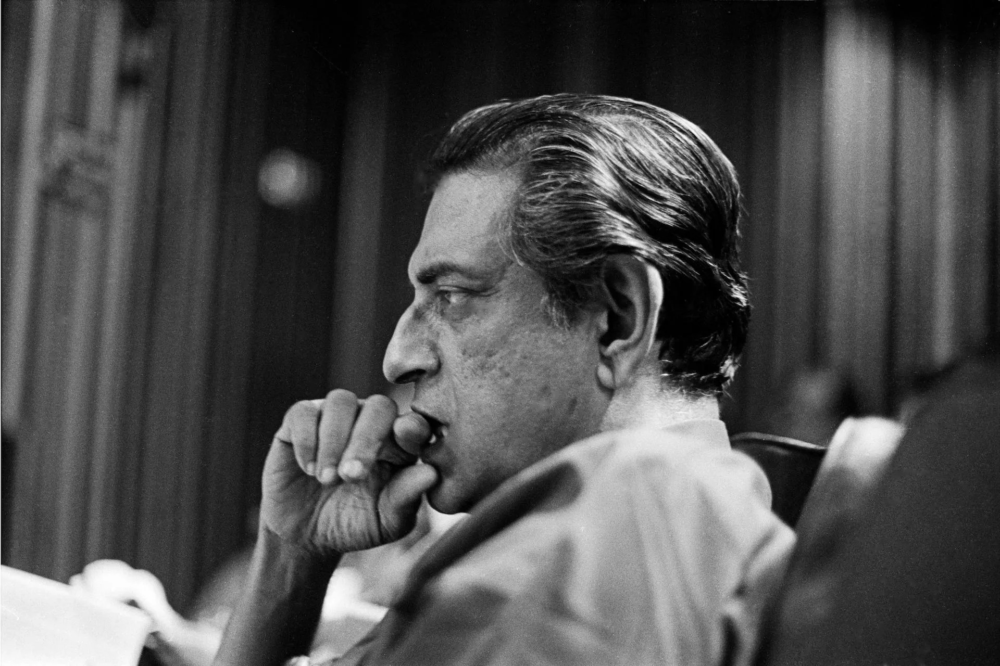

A Tribute To
Satyajit Ray
From 1921 to infinity.
Satyajit Ray was an Indian director, screenwriter, documentary filmmaker, author, essayist, lyricist, magazine editor, illustrator, calligrapher, and music composer. One of the greatest auteurs of film-making,Ray is celebrated for works including The Apu Trilogy (1955–1959), The Music Room (1958), The Big City (1963) and Charulata (1964) and many more.